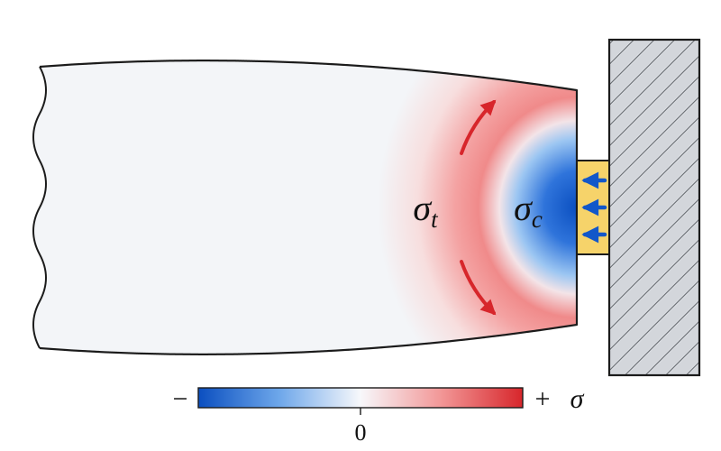

Camda basma gerçekten zararsız mı?
Araç hakkında kısaca
Athermal Bağ Hesabı, bir lensin metal ya da başka bir yuvaya yapıştırıcıyla bağlandığı montajlarda bağ kalınlığını ve bu bağın sıcaklık ve şok altında lense ve yapıştırıcıya yüklediği gerilmeleri hesaplayan bir araç. Veritabanında 172 optik malzeme (130 OHARA, 28 SCHOTT, 10 kristal, 4 diğer), 75 yuva malzemesi (60 metal, 9 polimer, 6 seramik), 40 yapıştırıcı (23 epoksi, 9 silikon, 7 UV, 1 poliüretan), 42 Weibull veri seti ve 97 formül kartı bulunuyor.
Basmayı neden sıfır sayıyorduk, artık neden saymıyoruz?
Araç, lensle yapıştırıcı arasındaki radyal gerilmeyi bağ boyunca ortalama bir değer olarak hesaplar. Önceki sürümlerde bu gerilme basma çıkarsa sıfır kabul ediliyordu. Gerekçe, camın basmaya karşı çok dayanıklı olması ve kırılmanın çekmeden başlamasıydı.
Bu kabulün eksiği şu: camda bir bölge basma altındaysa, kuvvet dengesi için o bölgeyi çevreleyen cam çekmeye zorlanır. Kasunic (Optomechanical Systems Engineering, s.120, Şekil 6.14 ve Denk. 6.7) bu çekmeyi camın Poisson oranıyla ilişkilendirir: σt = (1/3)(1 − 2ν)·σc ≈ 0.2·σc.

Schwertz (2010, s.20–21) aynı ilişkiyi σt ≈ σc/6 olarak sadeleştirir. Bu sadeleştirmenin hatası, Poisson oranı 0.22–0.27 olan camlarda %10'un altındadır. Schwertz formülün geçerliliğinin hâlâ tartışmalı olduğunu, ama kabul gören yaklaşım olduğunu da not eder. N-BK7 için σc/σt ≈ 5.1, kuvars cam için ≈ 4.6'dır.
Pepi (Strength Properties of Glass and Ceramics, s.104–105) yapıştırılmış bağlarda aynı olguyu anlatır. Bağın altında gerilme düşük ve basma yönünde olabilir; bağ kenarında ise sert biçimde yükselir ve çekmeye döner. Cam kırılması da çoğunlukla bu kenar bölgesinden başlar.
Bu nedenle bir basma değeri, camda çekme olmadığını göstermez; basmanın çevresinde bir çekme bileşeni vardır. Önceki kural bu bileşeni yok sayıyordu, bu sürümde hesaba katılıyor.
Araçta nasıl kullanılır
Formül aslında tutucu halkanın lense bastırdığı temas basıncı için verilmiştir. Araçta yapıştırıcının lense uyguladığı radyal basmaya uygulanır.
Her yük durumu için (2 sıcaklık × 3 bağ kalınlığı × 2 şok yönü) lensteki radyal gerilme basma çıkarsa, yerine (1 − 2ν)/3·|σ| büyüklüğünde bir çekme konur. Bu çekme kayma gerilmesiyle birleştirilir ve camın Weibull kırılma olasılığı hesabına girer.
Yapıştırıcıda neden değişmedi?
Kasunic'in formülü, basılan bir bölgenin çevresindeki malzemenin dengeyi sağlamak için çekmeye girmesini anlatır. Lenste durum tam olarak budur: bağ lensin kenarındaki bir bandı basar, lensin geri kalanı yüksüzdür ve bu çevre bölge çekmeye zorlanır.
Yapıştırıcı katmanı ise iki sert yüzey arasında kalan ince bir tabakadır ve tamamı aynı anda basılır. Onu çevreleyip çekmeye girecek yüksüz bir yapıştırıcı bölgesi yoktur. Bu nedenle formülün anlattığı mekanizma burada aynı şekilde ortaya çıkmaz.
Yapıştırıcının asıl yükü kaymadır ve araç her yük durumu için en büyük asal gerilmeyi kayma ile radyal gerilmeden hesaplar. Basma bu hesapta asal gerilmeyi azaltır. Basmayı sıfır saymak sonucu büyütür, yani güvenli tarafta kalır. Camda ise basmayı sıfır saymak gerçekte var olan bir çekmeyi yok saymak demekti. İki malzemeye farklı davranılmasının nedeni budur.
Bağ kenarındaki gerilme yığılması da yapıştırıcı kontrolünde ayrı bir gerilme yığılma katsayısıyla hesaba katılır.
Bağ kalınlığı seçimi de bu kurala bağlandı
Basmanın camda çekme oluşturduğu kabul edilince, bağ kalınlığının nasıl seçildiği de yeniden ele alınmalıydı. Önceki sürümlerde tolerans bandı en büyük çekmeyi en küçük yapacak şekilde yerleştiriliyor, basma yalnızca lensin basma sınırıyla kontrol ediliyordu. Tüm çalışma aralığı kür sıcaklığının bir tarafında kaldığında ise bant tamamen basma tarafına konuyordu.
v2.10'da bant, camdaki en büyük gerilmeye göre seçiliyor. Bu, camın kırılma hesabında kullanılan gerilmedir: radyal gerilme ile kaymanın birleşimi, basma (1 − 2ν)/3 ile çekmeye çevrilmiş halde. Yapıştırıcı, radyal çekme sınırı, camın kırılma olasılığı hedefi, lens ve yuva kontrolleri ise seçimde aşılmaması gereken sınırlar.
Önceliği cam alır. Camın kırılma olasılığı hedefin yüzde birinin altında kalan konumlar varsa, bunlar arasından athermal kalınlığa (h_opt) en yakın olanı seçilir; böylece bağ gereksiz yere kalınlaşmaz. Böyle bir konum yoksa camdaki gerilmeyi en küçük yapan konum seçilir. Bazı sınırlar hiçbir konumda sağlanamıyorsa yalnızca onlar bırakılır, diğerleri korunur ve araç hangi sınırın sağlanamadığını yazar. Tolerans penceresi de aynı sınırlarla hesaplanıyor; hiçbir tolerans mümkün değilse araç bunu ve pencereyi hangi sınırın kapattığını açıkça bildiriyor.
Sıcaklığa bağlı genleşme tablosu olan camlarda athermal kalınlık da aynı ağırlıkla bulunuyor: kür sıcaklığı çalışma aralığının dışındaysa, iki uçtaki çekme ile basmanın oluşturduğu çekme eşitleniyor. Dayanıklı h de aynı ölçütle aranıyor; tek farkı, malzeme verilerindeki belirsizliğin kötümser senaryosunda da sınırların sağlanmasını istemesi.
Sonuç ne kadar değişti?
Varsayılan örnekte camın kırılma olasılığı yaklaşık 3·10⁻¹⁶'dan 1.3·10⁻¹⁴'e çıktı. Yaklaşık 40 katlık bir artış, ama hâlâ 10⁻⁴ hedefinin çok altında. Bağ kalınlığı 0.047'den 0.048 mm'ye, yani athermal kalınlığa yaklaştı; yapıştırıcı kontrolü sınırda ama geçiyor. Genel karar değişmedi.
Diğer yenilikler
- 130 OHARA camı, 10 °C aralıklı sıcaklığa bağlı ısıl genleşme katsayısı tablosuyla eklendi; hesap, kür sıcaklığından çalışma sıcaklığına kadar sekant genleşmeyi kullanıyor.
- Titreşim hesabında varsayılan kalite faktörü Q = 25 oldu (Schwertz 2010, s.61).
- Pad bağlarında yanal frekans için Hatheway yaklaşımı karşılaştırma olarak gösteriliyor.
- Telefon görünümü iyileştirildi.
Kaynaklar
- J. W. Pepi, Strength Properties of Glass and Ceramics, SPIE Press, 2014, s.104–105.
- K. J. Kasunic, Optomechanical Systems Engineering, Wiley, 2015, s.120, Denk. 6.7.
- K. Schwertz, Useful Estimations and Rules of Thumb for Optomechanics, 2010, s.12, 20–21, 36–38, 61.
- K. Schwertz, J. H. Burge, Field Guide to Optomechanical Design and Analysis, SPIE Press, 2012, s.48–50.
- OHARA optik cam kataloğu, 2026-04.